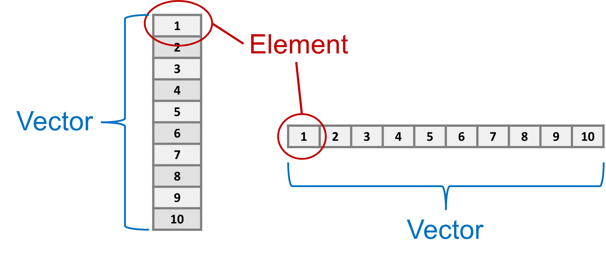
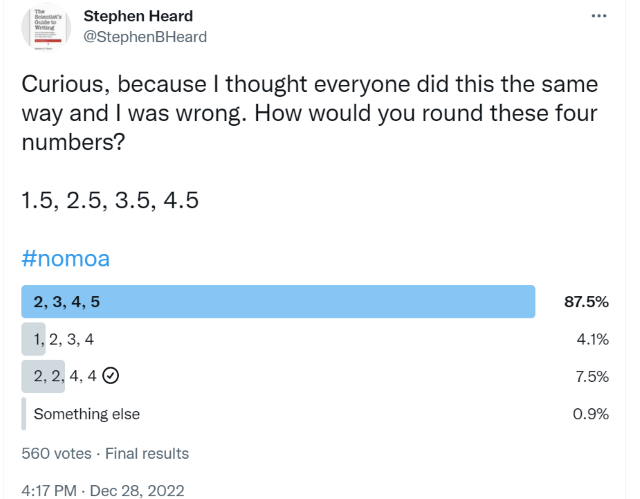
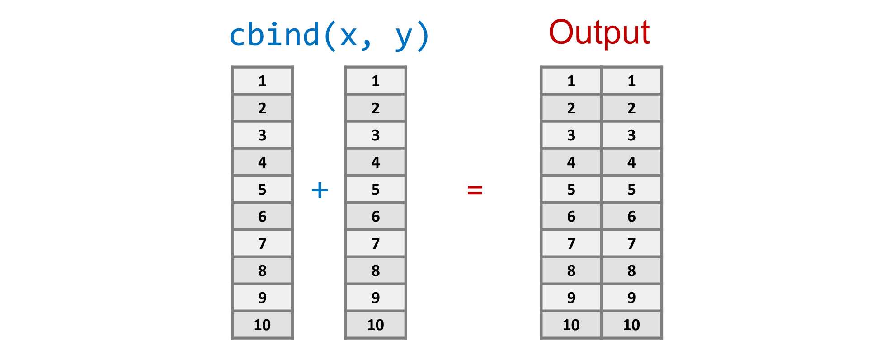
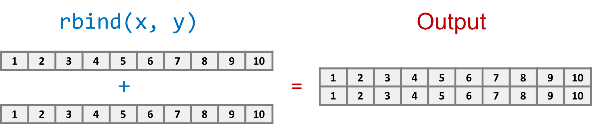

# Use hastags to make comments - not read by the R console
# Use other characters and blank lines to improve readability:
# -------------------------
# My first R script
# Today's Date
# -------------------------
# Add a summary description of what the script does
# This script will...
# And annotate individual parts of the scriptR Fundamentals
Introduction
This chapter provides a rapid breakdown of the core functionality of R. There is a lot to cover in a very short time. You may be tempted to skip over some of these sections, but this chapter forms the foundation of future chapters. If you don’t have a solid foundation, you will have trouble building your coding skills. Remember that you can only learn coding through repetition. Take the extra time and make the effort to type out each code and run it in your console.
I can’t stress this enough: It is important that you physically participate and code along with the examples. Type everything out. The physical act of typing into R and troubleshooting any errors you get is a crucial part of the learning process.
It’s very likely you will sometimes get a different result, such as a warning or error message. Don’t get frustrated! Think of it as an opportunity to work on you debugging skills. Check to make sure you don’t have any typos, like the letter l and the number 1, or \ vs /, or missing spaces or other changes that may be hard to spot visually. If you are getting a warning, read it carefully.
R Basics
Make comments inside your code with the hash mark #. When you type this character, it tells the R program to ignore everything that comes after it.
Documentation is an important part of coding. It takes a bit of extra time to write, but it will save you a lot of time. Careful documentation will be essential when coding collaboratively, even if your collaborator is you when you wrote code six months back.
It’s ok to play around with code to get it working, but once you have a piece you are happy with, be sure to go back and add documentation.
Later, we will see how to use R markdown to provide more attractive documents for reproducible analysis. But for dedicated programs, you can get creative with characters to help make long documentation more readable:
Basic Math
You can do basic mathematical equations in R. Many of us choose to become biologists because we aren’t comfortable with mathematical equations, only to find out later how important math is for biology! As we’ll see later, coding can help to demystify mathematical equations. Let’s start with some basics:
Yes, type these out and look at the output!
10 + 2 # add
10 - 2 # subtract
10 * 2 # multiply
10 / 2 # divide
10 ^ 2 # exponent
10 %% 2 # moduloQuestion: Did you type this out? If not, you missed something important. Go back to the beginning of the book and read more carefully.
The modulo %% is one you may not be familiar with, but it comes in really handy in a lot of coding contexts. The modulo is just the remainder of a division. So 10 %% 2 returns a zero because 2 divides into 10 five times, but 10 %% 3 returns a 1 because three divides into 10 three times with 1 remainder.
This can be useful to determine whether a number (x) is even (i.e. if x %% 2 returns zero).
Tip: To get more practice, use R instead of your calculator app whenever you need to calculate something. It seems silly to go through the trouble to open R Studio to calculate a few numbers, but it will get you comfortable using R and R Studio, which will pay off in the long run..
Objects & Functions
Objects and functions are the bread and butter of the R programming language. An object can take many forms, but is generally assigned from an input or to an output. This could include a letter or a number, or a set of letters or numbers, or a set of letters and numbers, or more structured types of objects that link together more complex forms of information.
Objects are manipulated with functions. Each function has a unique name followed by a set of parentheses, which are used to define input and parameters that are used by the function, including inputs and outputs.
In fact, there is a function called function(). Yes, there is a function in R called function, and you can use it to write your own custom functions, but we’ll save that for later.
For now, just remember that functions have brackets. Brackets are used to define input and parameters that the function uses to produce output.
Warning: Do not put a space between the function name and the opening bracket
(or you will generate an error.
c()
The concatenate function c() is a very simple yet important and common function in R. Use it to group items together.
c(1,2,3,5)[1] 1 2 3 5In this function, the numbers 1, 2, 3, and 5 are the input parameters. Each number is itself an object in R.
The output is a type of object called a vector that contains four elements. The c() function takes four separate objects (elements) and combines them into a new object (vector). If this seems weird, take a few minutes to think it through because this difference will be important later.
Think of a vector as part of a row or column in a spreadsheet, and an element as one of the cells, as shown in Figure 1.1. We can also have more complex objects that are equivalent to entire spreadsheets, or a combination of multiple spreadsheets and other kinds of structured data.

Math Functions
Here are some functions for common mathematical calculations. Type these out and then try changing some of the numbers in brackets to get a feel for them:
abs(-10) # absolute value
sqrt(10-1) # square root (with subtraction)
log(10) # natural log
log10(10) # log base 10
exp(1) # power of e
sin(pi/2) # sine function
asin(1) # inverse sine
cos(pi) # cosine
acos(-1) # inverse cosine
tan(0) # tangent
atan(0) # inverse tangentNote that
piis a special object containing the digits of pi. Try typingpiin the R Console and pressingEnter.
Round/Truncate
We can use R for rounding and truncating numbers.
round(pi, digits=3) # standard rounding to 3 digits[1] 3.142floor(pi) # round down to closest whole number[1] 3ceiling(pi) # round up to closest whole number[1] 4signif(pi, digits=2) # round to keep 2 significant digits[1] 3.1Pro-tip:
round()withdigits=3is a great function to avoid clutter when generating output for your reports, manuscripts, theses, and other scientific documents.
Later, we’ll look at how to generate reports that incorporate code (e.g. statistical analyses) that you can quickly update with new data. Rounding the output of your R code with round() makes for much cleaner, and more readable reports. More than three digits may be necessary in a few cases, but in most cases it just adds unnecessary clutter.
Rounding Rule
Question: What’s the proper way to round a number that ends with 5 (e.g. 1.5, 2.5, 3.5, 4.5)?
A Twitter by evolutionary entomologist Dr. Stephen B. Heard reveals some confusion about this rule, as shown in Figure 1.2.

Answer: One convention is to round the nearest even number. But, this is not the only convention you’ll see.
R has the answer:
round(c(1.5,2.5,3.5,4.5))[1] 2 2 4 4Rounding numbers can produce some unexpected results. For example:
round(2.675,2)[1] 2.67Why not 2.68? The reason is the way that programming languages store numbers with decimals. These are called float numbers and they way they are encoded in memory can cause very slight deviations in the numbers. In this case, 2.675 is stored as 2.67499999999999982236431605997495353221893310546875, which is close enough for most calculations. However, it’s just slightly smaller than 2.675, which causes it to round down to 2.7 instead of up to 2.8 – these small differences usually don’t matter much, but in more advanced calculations they can be important. For example, models that use probabilities often add log-probabilities rather than multiply raw probabilities to avoid multiplying very small numbers that can be problematic for computers. The key is to carefully review the output of your programs and double-check your calculations.
Notice how we nested a function inside of another function. We wrote a concatenate c() function to generate a vector of four elements. We then put that function inside of the round() function. The round function applied the rounding algorithm separately to each of the four elements created by c(), generating a vector output containing four elements – one rounded number for each of the four input numbers. This may be a bit tricky to understand, but we’ll work through more examples in this book.
Logic Operators
An operator is used to compare objects. We’ll use these a lot when we start writing our own custom programs and functions. It also comes in handy for sub-setting your data.
1 > 2 # greater than[1] FALSE1 < 2 # less than[1] TRUE1 <= 2 # less than or equal to[1] TRUE1 == 1 # equal to[1] TRUE1 == 2 | 1 == 1 # | means 'OR'[1] TRUE1 == 2 & 1 == 1 # & means 'AND' [1] FALSE1 == 1 & 1 == 1[1] TRUEWe can also use! as a negation/inverse operator
1 != 1 # not equal to[1] FALSEGroup Comparisons
Instead of the vertical bar character |, you can use %in% with c() to check a large number of values.
1 %in% c(1,2,3,4,5,6,7,8,9,10)[1] TRUECongrats!
Before we move on to the next section, take a second to look back at all the coding skills you’ve already learned: documenting code, basic math, working with objects and functions, combining objects, some advanced math functions, and comparing objects. Well done!
Seriously, you already know enough write your own R program! Try it!
- Make a new file:
File-->New File-->R Script - Write some code – try to use as many concepts above as you can.
- Don’t forget your documentation!
- Save the file
- Run the file and look at the output
- Debug any errors and warning messages.
- Show off your program to your friends and family
You are a coder now! Let’s take your skills to the next level.
Use ? for HELP
Whenever you are learning a new function, you should use ? and carefully read about all the parameters and outputs. The explanations can be a bit technical, which is intimidating at first. But after enough practice you will start to understand more and more of the descriptions. Let’s break it down:
?roundNote: In R Studio, the help will open in a separate ‘Help’ tab (lower, right panel in the default view)
Description
The description gives a general overview of the function. In this case, round() is one of a set of related functions, which are all described together in the same help file
Usage
This shows the general form of the function that is run in the R Console.
Arguments
This explains the ‘arguments’ of the function, which are the input values and parameters. In the case of round the arguments include a numeric vector x as input and digits as a parameter.
Value
This help doesn’t have a Value subheading, but more complex functions do. For example, try ?lm to see the help for linear models. Values are objects created by the function as output. For example, the model coefficients and residuals are separate objects of a linear model created by the lm() function.
Details
This explains the function(s) in greater detail, and is worth reading the first few times you use a function.
Examples
This section gives examples as reproducible code, which you can copy-paste right into your terminal.
To conclude, always read the help carefully when you first use a function. It’s normal to keep referring to the help every time you use a function that you aren’t too familiar with. It’s also normal that you might not understand everything in the help file. Just do your best and be persistent and over time it will start to make more sense to you. You will find these get easier as you read about more functions and try to apply whatever you can understand.
Random Numbers
The ability to quickly and efficiently generate random numbers has a lot of useful applications for biologists. What are some examples?
- Generating random numbers as part of an experimental design.
- Simulating ‘noise’ or stochastic processes in a biological model.
- Developing a null model for statistical significance testing.
- Exploring ‘parameter space’ in a Maximum Likelihood model or a Markov Chain Monte Carlo simulation.
It is very easy to generate some random numbers in R, from a variety of different sampling distributions.
These are covered in more detail in the Distributions Chapter of the book R STATS Crash Course for Biologists , which is part of a different book (R Stats Crash Course for Biologists). For now, we’ll just focus on generating random numbers.
Uniform
Perhaps the simplest random number is a whole number (i.e. no decimal) drawn from a uniform distribution, meaning that each number has an equal probability of being selected.
runif(n=10, min=0, max=1) [1] 0.1117100 0.6569272 0.8211328 0.2509286 0.3734155 0.6324161 0.3697382
[8] 0.9881294 0.5996457 0.2274557Note that your randomly chosen numbers will be different from the ones randomly chosen here.
The runif() function here uses 3 parameters:
n– the number of random values to generatemin– the minimum value that can be chosenmax– the maximum value that can be chosen.
We’ll talk more about parameters later.
Gaussian
One of the most common random distributions in biology is the Gaussian distribution with parameters for mean and sd (standard deviation). Rational numbers (i.e. with decimal) closer to the mean are more likely to be chosen, with sd defining probability of sampling a value far above or below the mean value.
rnorm(10, mean=0, sd=1) [1] 0.03593779 1.28266635 1.08966908 0.74950488 1.21493109 -0.04426062
[7] 1.32068115 -0.20525943 -0.01895848 1.02895996Side note: Look what we did here. We wrote
10instead ofn=10and the function still works! In fact, we can get away with:
rnorm(10,0,1) [1] -0.56314215 0.07072185 -0.44125894 0.15320699 -0.64631668 -1.36350796
[7] 1.86823425 1.60473928 0.13220764 -0.87088755You can figure out the order by reading the help (?) for the function. When you are starting out, it’s a good idea to type the extra characters to specify the parameter names to avoid bugs in your code. It also makes the code more readable to others.
Poisson
A poisson distribution includes only whole numbers with a parameter lambda, which is analogous to the mean in the normal distribution.
Poisson distributions are common for count data in biology – seed or egg number, for example.
rpois(10, lambda=10) [1] 8 13 11 10 7 17 18 9 11 8Binomial
The binomial distribution is useful for binary outcomes – variables with only two possibilities, which can coded as 0 or 1 (or true/false). The size parameter is the number of events (e.g. number of coin flips), and the prob parameter is the probability of getting a 1 each time.
Binomial distributions are commonly used in population genetics (e.g. sampling alleles with different frequencies).
rbinom(10, size=1, prob=0.5) [1] 0 1 0 0 1 0 0 0 1 0rbinom(10, size=10, prob=0.5) [1] 4 7 3 6 4 4 3 5 3 5Other
Here are a few other random distributions you might be familiar with:
| Distribution | R function |
|---|---|
| Chi-Squared | chisq() |
| t | t() |
| F | F() |
| Exponential | exp |
| Log-Normal | Lognormal |
| Logistic | Logistic |
Repeat, Replicate & Sample
In addition to drawing random numbers from defined distributions, it is often helpful to sample from a defined input vector.
For example, maybe we want to generate a data frame with alternating rows for Treatment and Control. We can use the rep() function to repeat values.
rep(c("Treatment","Control"),3)[1] "Treatment" "Control" "Treatment" "Control" "Treatment" "Control" Or maybe we want to repeat a function, such as sampling from a normal distribution and calculating the mean of the sample. We could try rep() again.
rep(mean(rnorm(1000)),3)[1] -0.04046735 -0.04046735 -0.04046735Note that your numbers will probably be different, due to random sampling. But there is a problem.
Question: What is wrong with this output?
Answer: We are not repeating the nested function mean(rnorm()). Instead, we are just running it once and repeating the output.
To repeat the function, we use replicate() instead of rep().
replicate(3,mean(rnorm(1000)))[1] 0.030529408 0.004617699 -0.003606109Instead of repeating and replicating, we may want a random sample from our input vector. There are two ways to draw a random sample:
With Replacement – Randomly sample along the vector and allow for the same element to be sampled more than one. To remember this, imagine each element is a marble in a bag. When your select a specific marble, you replace it in the bag so that it can be sampled again.
Without Replacement – Randomly reshuffle the elements of a vector. Imagine that marbles do not get replaced in the bag, so that each element can be sampled only once.
Sample with replacement
sample(c(1:10),10,replace=T) [1] 5 10 9 3 6 6 8 10 6 9Sample without replacement
sample(c(1:10),10,replace=F) [1] 5 6 7 8 10 4 3 1 2 9set.seed()
Fun fact: random numbers generated by a computer are not truly random. Instead, the numbers involve a calculation that require a starting number called a seed. The seed might be the current Year/Month/Day/Hour/Minute/Second/Millisecond, which means the ‘random’ number could be determined by somebody who knows the equation and the precise time it was executed.
In practice, computer-generated random numbers are much more ‘random’ than numbers ‘randomly’ chosen by a human mind.
We can also take advantage of a computer’s pseudo-random number generation by defining the seed number. This can help with testing and debugging our code, and for writing code for research that is 100% reproducible. With the same seed, anyone can generate the exact same “random” numbers. We do this with the set.seed() function.
Compare these outputs:
runif(5)[1] 0.4395633 0.3930605 0.4975544 0.9320028 0.5169364runif(5)[1] 0.39510560 0.03523317 0.94210203 0.92165593 0.47039949set.seed(3)
runif(5)[1] 0.1680415 0.8075164 0.3849424 0.3277343 0.6021007set.seed(3)
runif(5)[1] 0.1680415 0.8075164 0.3849424 0.3277343 0.6021007set.seed(172834782)
runif(5)[1] 0.13729290 0.18587365 0.01860484 0.88440060 0.21414154set.seed(172834782)
runif(5)[1] 0.13729290 0.18587365 0.01860484 0.88440060 0.21414154runif(5)[1] 0.19787402 0.84870074 0.27303904 0.12225215 0.08365613See how the same ‘random’ numbers are generated with the same seed?
Combining Objects
Returning now to the concatenation function, we saw how to use use c() to concatenate single objects.
c(1,2,5)[1] 1 2 5We can also nest functions, for example we can use c() inside of another concatenate function.
c(c(1,2,5),c(48,49,50))[1] 1 2 5 48 49 50If we need to concatenate a range of whole numbers, we can simplify with the colon :
c(1:10) [1] 1 2 3 4 5 6 7 8 9 10c(100:90) [1] 100 99 98 97 96 95 94 93 92 91 90c(-1:1)[1] -1 0 1Question: How could you use this to generate a set of numbers from -1.0 to 1.0 in increments of 0.1? You already have all the coding knowledge you need to do this! You just have to try combining two of the things you have learned so far.
Hint: Think about how many elements should be in the vector, and what kind of math operation you could use.
Sequence
Alternatively, you can also use seq() to generate more complicated sequences
seq(-1, 1, by = 0.1) [1] -1.0 -0.9 -0.8 -0.7 -0.6 -0.5 -0.4 -0.3 -0.2 -0.1 0.0 0.1 0.2 0.3 0.4
[16] 0.5 0.6 0.7 0.8 0.9 1.0seq(-1, 1, length=7)[1] -1.0000000 -0.6666667 -0.3333333 0.0000000 0.3333333 0.6666667 1.0000000Rows and Columns
As noted above, the output of c() with two or more elements is a vector object that is conceptually similar to a set of rows or columns in a spreadsheet.
Use cbind() to bind columns and rbind() to bind rows, as shown in Figures 1.3 & 1.4. The result is a two-dimensional matrix, which is conceptually similar to a spreadsheet of n rows by c columns.

cbind(1:10,10:1) [,1] [,2]
[1,] 1 10
[2,] 2 9
[3,] 3 8
[4,] 4 7
[5,] 5 6
[6,] 6 5
[7,] 7 4
[8,] 8 3
[9,] 9 2
[10,] 10 1
rbind(1:10,10:1) [,1] [,2] [,3] [,4] [,5] [,6] [,7] [,8] [,9] [,10]
[1,] 1 2 3 4 5 6 7 8 9 10
[2,] 10 9 8 7 6 5 4 3 2 1What are
n(number of rows) andc(number of columns) for each of the above examples?
Congrats, Again!
Okay, let’s take a quick breather from writing code. You have been typing along, right? If not, go back and type out the code. It really is so important if you want to learn this!
We are about to delve deeper into the realm of object-oriented programming, but first we need to cover a few basic concepts.
Data Types
Programming languages like R use different data types.
It’s very important to understand data types in order to properly encode and analyze data in R. Here is an overview of the main data types:
| Type | Example | Description |
|---|---|---|
string |
"String" |
Strings are the most common and versatile data type. They can be defined with single ('') or double ("") quotation marks. The downside of strings is that you typically can’t do mathematical functions with them. |
numeric (float) |
12.421 |
Numeric variables are numbers and come in a few flavours. Floats are rational numbers. |
numeric (integer) |
12 |
Integers are numeric objects that store whole numbers, and may be positive or negative (no decimal). |
complex |
0+12.43i |
Complex numbers include real and imaginary numbers. |
logical |
T or TRUE |
Logical (aka Boolean) variables are either TRUE or FALSE, which can be shortened to T and F (Note the use of capital letters only). NOTE: TRUE and T are a special logical data type and are interchangeable in R, but "TRUE" and 'TRUE' and "T" with quotation marks are strings and are treated as separate entities. |
factors |
any | Factors are a special type of data that may include strings and/or numbers but have a limited number of classes. Factors are often used to code groups in statistical models. |
Note that computers cannot store irrational (i.e. infinite, non-repeating) numbers, instead they have encoded as fractions or equations and rounded to some (tiny) decimal place.
Why does it matter? It’s very common to have errors in statistical analyses caused by the wrong kind of data. Here is a very common example of a big coding error in Biology:
Imagine you have an experiment set up with three experimental groups coded as 1, 2 and 3.
Question: What data type should these be?
Answer: These should be coded and analyzed as factors NOT numeric variables. Running statistical anlayses in R on numeric objects that should be factors will give completely different (and wrong!) statistical results.
More generally, you should keep these data types in mind. Consider memorizing them, or even just printing or writing them out and pasting them on your wall. When you get to a point where you are collecting your own data or working with other data sources, you will need to think carefully about which data type each observation should be coded as. This is called data coding and it is one of the most important steps in any data analysis pipeline.
Objects & Variables
R supports Object-Oriented Programming (OOP), which is a programming style that defines and manipulates objects
As we have seen, an object in R can be a lot of things, but to understand some of the key objects, let’s start by thinking about a spreadsheet (example Microsoft Excel).
A spreadsheet has individual cells or elements (boxes) organized into rows (e.g., numbers) and columns (e.g., letters), and may have multiple sheets (tabs). Any of these can be coded objects in R. Objects can also be more complicated types of text files. In biology, we might have DNA (or RNA or protein) sequence data, or matrices of species community data, or time series, or the output of a statistical test. All of these can be coded as objects in R.
Variables are objects that can change value. In R, we can assign variables using <- or =. Almost everything you need to know about R to be a prolific data scientist in biology involves manipulating object variables with functions!
Elements (Cells)
The most basic object is a single value. For example, a string:
X<-"string"Question: Why no output?
Answer: When we wrote: X<-"string" R created the object called X. The value of "string" is stored in the R object called X, so no output is produced.
There are a few options to see the contents of X:
print(X)[1] "string"print() Is most generic and versatile for providing feedback while running complex scripts (e.g. during loops, Bash scripts, etc)
paste(X)[1] "string"paste() Converts objects to a string, we’ll come back to this.
X[1] "string"Generally print() or paste() are preferred over calling the object directly.
OR, we can put the whole thing in brackets, which saves a line of code:
(X<-"string")[1] "string"Which one should you use? It’s ok to use the bracket methods for simple scripts and reports, but use print() for more complicated analysis pipelines, especially those that run through a scheduler on remote computers.
Vector
A vector is a one-dimensional array of cells. This could be part of a row or column in our spreadsheet example.
Each cell within the vector has an ‘address’ – a number corresponding to the cell ranging from \(1\) to \(N\), where \(N\) is the number of cells.
The number of cells in a vector is called the length of the vector.
All items in a vector must be of the same data type. If you mix data types, then the whole vector will be formatted to the most inclusive type. For example, if you include a string with any other format, then the whole vector will be treated as a string:
Xvec<-c(1.1829378, X, 1:10, "E", "Computational Biology", 100:90)
Xvec [1] "1.1829378" "string" "1"
[4] "2" "3" "4"
[7] "5" "6" "7"
[10] "8" "9" "10"
[13] "E" "Computational Biology" "100"
[16] "99" "98" "97"
[19] "96" "95" "94"
[22] "93" "92" "91"
[25] "90" A string is more inclusive because whole numbers can be stored as strings, but there is universally accepted way to store a character string as a whole number.
Similarly, a vector containing integer and rational numbers is a vector of only rational numbers:
c(1,2,3,1.23)[1] 1.00 2.00 3.00 1.23Protip: A common problem when importing data to R occurs when a column of numeric data includes at least one text value (e.g. “missing” or “< 1”). R will treat the entire column as text rather than numeric values. Watch for this when working with real data!
If you want to mix data types without converting them, you can use a list object, which is described later. But first we will need to get comfortable working with the more basic data types.
Subset a Vector
Each cell within a vector has a specific address. Just as text message with the correct email address can find its way to your computer, you can find an element in a vector using its address. Remember that in R, addresses start with the number \(1\) and increase up to the total number of elements.
R uses square brackets [] to subset a vector based on the element addresses.
Xvec[1][1] "1.1829378"Xvec[13][1] "E"Xvec[1:3][1] "1.1829378" "string" "1" Matrices
A matrix is a 2-D array of cells, equivalent to one sheet in a spreadsheet program. The matrix() function can convert a vector to a matrix.
Xmat<-matrix(Xvec,nrow=5)
Xmat [,1] [,2] [,3] [,4] [,5]
[1,] "1.1829378" "4" "9" "99" "94"
[2,] "string" "5" "10" "98" "93"
[3,] "1" "6" "E" "97" "92"
[4,] "2" "7" "Computational Biology" "96" "91"
[5,] "3" "8" "100" "95" "90"Be sure to understand what happened here. Compare this Xmat object to the Xvec object, above. See how we have re-arranged the elements of a one-dimensional vector into a two-dimensional matrix? Note: these two objects need the same number of elements – \(1\times25\) for Xvec and \(5\times5\) for Xmat.
Subset a Matrix
Did you notice the square brackets along the top and left side? Do you see how the rows have numbers before the comma and columns have numbers after the comma?
These show the address of each element in the matrix. We can subset with square brackets, just like we did with vectors. Since there are two dimensions, we need to specify two numbers using the syntax [row,column].
For example, if we want to select the element from the 3rd column of the 1st row:
Xmat[1,3][1] "9"Or leave it blank if you want the whole row or column:
Xmat[1,][1] "1.1829378" "4" "9" "99" "94" Xmat[,3][1] "9" "10" "E"
[4] "Computational Biology" "100" Protip: Always remember
[row,col]: “rows before and columns after the comma. Say it with me”Rows before columns”. Say it again, and again, until it is hard-coded in your brain.
Arrays
Array is a general term to describe any object with \(N\) dimensions. We’ve already seen a few different examples:
| Dimension | Object Name |
|---|---|
| 0 | Cell |
| 1 | Vector |
| 2 | Matrix |
| 3+ | Array |
In R you can build arrays by adding as many dimensions as you need using the array() function.
Xarray<-array(0, dim=c(3,3,2)) # 3 dimensions
Xarray, , 1
[,1] [,2] [,3]
[1,] 0 0 0
[2,] 0 0 0
[3,] 0 0 0
, , 2
[,1] [,2] [,3]
[1,] 0 0 0
[2,] 0 0 0
[3,] 0 0 0Notice how 3rd dimension is sliced to print out in 2D. Another way to conceptualize this array is to think of two matrices with the same dimension (rows-by-columns). The element of each matrix can be addressed by its [row,col] but we need a third dimension do distinguish between the two matrices. You can see this in the output above each matrix: ,,1 vs ,,2. Together, this array has three dimensions: [row,col,matrix].
Question: If we add a third matrix with the same number of rows and columns, how many dimensions would you need to pull out a specific cell element in R? What if there were 10 or 100 instead of three?
Answer: Three! In each case, we whould still have a 3-dimensional array, and we can access any element as above: [row,col,matrix]. All we are changing is the matrix number from 2 to 3 to 10 to 100!
Higher-order arrays are also possible, but a bit tricky to read on a 2-dimensional screen, and very hard to conceptualize.
Here’s an example of a six-dimensional array.
Xarray<-array(rnorm(64), dim=c(2,2,2,2,2,2))Once you get the hang of it, it’s easy to subset. Just think of each dimension, separated by commas.
Xarray[1:2,1:2,1,1,1,1] [,1] [,2]
[1,] -1.718987 0.3487603
[2,] 1.779268 -0.3523615Xarray[1:2,1,1,1:2,1,1] [,1] [,2]
[1,] -1.718987 0.8664164
[2,] 1.779268 1.2394975Question: Why are these numbers not the same?
Answer: Look at the array[] function and compare to the 6-D array to understand how this works. Each function captures a different 2-dimensional subspace of the 6-dimensional array
If these higher-dimension arrays are too abstract, don’t worry. You can get a better understanding with practice. They are important for neural networks, machine learning, and multivariate data (e.g. quantitative genetics, community ecology). Luckily, most of what you need to know you can extrapolate from your intuition about 2-dimensional and 3-dimensional space. Just make sure you understand the similarities and differences among cells/elements, vectors and matrices before you move on.
Lists
Matrices and higher-order arrays generally all have the same data type and sub-dimension. For example, if you want to combine two separate 2D matrices into a single 3-D array, then the individual matrices have to have the same number of rows and columns. They should also have the same data type, or else everything will be converted to the most inclusive type, as noted earlier in the Vectors section.
Often we may want to link different types of information together while still maintaining their different data types. Think of a record in a database where you may have information about an organism’s taxonomic classification (factors) height (numeric), weight (numeric), general notes and observations (string), number of scales (integer), and maybe a photograph (numeric matrix) and a DNA sequence (string vector). This wouldn’t fit neatly into an array format. Instead, we can use a list object.
Lists are useful for mixing data types, and can combine different dimensions of cells, vectors, and higher-order arrays.
Each element in a list needs a name:
MyList<-list(name="SWC",potpourri=Xvec,numbers=1:10)
MyList$name
[1] "SWC"
$potpourri
[1] "1.1829378" "string" "1"
[4] "2" "3" "4"
[7] "5" "6" "7"
[10] "8" "9" "10"
[13] "E" "Computational Biology" "100"
[16] "99" "98" "97"
[19] "96" "95" "94"
[22] "93" "92" "91"
[25] "90"
$numbers
[1] 1 2 3 4 5 6 7 8 9 10Important: Many of the statistical functions and other tools in R use list objects to store output. Taking some time now to think about how lists work will save time later when you need to interpret output of R functions.
Subset
There are a few different ways to subset a list object. We can subset by name using the $ character
MyList$numbers # Use $ to subset by name [1] 1 2 3 4 5 6 7 8 9 10Or we can slice using square brackets.
MyList[3] # A 'slice' of MyList$numbers
[1] 1 2 3 4 5 6 7 8 9 10This is similar to the way we used [] in vectors and matrices BUT note the inclusion of the name $numbers at the top of the output.
With lists, we have another option, to extract using double square brackets.
MyList[[3]] # An 'extract' of MyList [1] 1 2 3 4 5 6 7 8 9 10What’s the difference between
[]and[[]]?
This is a bit tricky, but if you invest some time now to understand, you will save yourself a lot of headaches troubleshooting error messages in your code. Do your future-self a favour and take some time to understand this…
First, Look carefully at the output above; notice how the [] includes $numbers but the [[]] includes only the values? This is important if you want to use the slice:
2*MyList[3]Error in 2 * MyList[3]: non-numeric argument to binary operator2*MyList[[3]] [1] 2 4 6 8 10 12 14 16 18 20Note the error generated in the first case
The second case is just a pure vector of numbers, that’s why we can multiply each value by two. The first case is still connected to a list object, with the $numbers indicating that we are looking at the numbers element of the list. This is part of a larger object, so R returns an error when we try to multiply a number.
In other words, the $numbers heading is part of the sliced object created with [] but NOT the extracted object created with [[]].
print() and paste()
As noted earlier, the print function is the go-to function for printing output to the user. The paste function is useful for combining things together.
Paste is a versatile function for manipulating output:
paste("Hello World!") # Basic string[1] "Hello World!"paste("Hello","World!") # Concatenate two strings[1] "Hello World!"Sometimes we need to convert numbers to strings. paste is an easy way to do this:
paste(1:10) # Paste numbers as strings [1] "1" "2" "3" "4" "5" "6" "7" "8" "9" "10"paste(1:10)[4][1] "4"Note how each number above is a separate cell in a vector of strings.
Use as.numeric to convert strings back to numbers.
as.numeric(paste(1:10)) # Convert back to numbers [1] 1 2 3 4 5 6 7 8 9 10We can also use the collapse parameter to condense a multi-cell vector into a single cell. Reading the help for new functions reveals a lot of great treasures like this!
paste(1:10,collapse=".")[1] "1.2.3.4.5.6.7.8.9.10"Question: What happens if we paste objects of different length?
paste(c("Hello","World"),1:10,sep="-") [1] "Hello-1" "World-2" "Hello-3" "World-4" "Hello-5" "World-6"
[7] "Hello-7" "World-8" "Hello-9" "World-10"Answer: The shorter vector gets recycled until every element of the longer vector is pasted.
It is not uncommon to nest a paste function within a print function to communicate output in more complex R scripts.
print(paste("Hello",1:10,sep="-")) [1] "Hello-1" "Hello-2" "Hello-3" "Hello-4" "Hello-5" "Hello-6"
[7] "Hello-7" "Hello-8" "Hello-9" "Hello-10"This would be useful if you were running a long program with many steps, maybe on a remote high-performance computer where you submit your jobs to a scheduler and you want your program to keep notes about its progress, or generate other notes or feedback. The output of paste is not shown on the screen if used inside of a loop, whereas the output of print is. More about loops below.
External Files
So far we’ve done everything within the R environment. If we quit R, then everything we have made will be removed from memory and we’ll have to start all over.
For larger projects and reproducible analysis, it is useful to save and load data from external files.
Working Directory
The working directory is the place on your computer where R looks to load or save your files. You can find your current working directory with the getwd() function.
getwd()Note: The output is specific to your computer, so it isn’t shown here.
Absolute Path
The directory shown in getwd() is called an absolute path. A path is just computer jargon for the way you get to your working directory, like walking down a path in your computer, turning into the correct directory or folder each time until you reach your destination. The absolute term means that it is a location that is unchanging. The problem, for reproducible research, is that the location is specific to your user profile on your computer.
You can set an absolute path with setwd(). Here’s one example:
setwd("C:/Users/ColauttiLab/Documents")Did you type out the above line? You should if you have been following the instructions! If you haven’t, go back to where you stopped and type everything out to reinforce it in your brain. Remember, going through and typing everything out is one of the most effective ways to learn to code.
If you have been typing along, you should have an error message, unless you are working in Windows and for some reason have a ColauttiLab username. Now try changing to a different directory on your computer.
If you are a mac user, your directory is probably similar, but without the C::
setwd("/Users/ColauttiLab/Documents")Again, you will get an error unless you replace the above with a directory that exists on your own computer.
This is why you should never use absolute path names in your code. You should always aim for reproducible code, and absolute paths are not reproducible on other computers.
Don’t worry, there is a better way…
Relative Path
In the absolute path example above, we first go to the root directory, which is the most basic level (or the C: drive in the case of Windows). From the root directory we first click on the Users folder, then the ColauttiLab folder, and finally the Documents folder.
In R, we can just provide a path name as text rather than clicking through all the different folders each time. But as we have seen, the problem with absolute path names is that they are often unique to each user.
Instead of an absolute path, we should use a relative path in our code. The relative path in R is denoted with a period, usually followed by a forward slash.
For example, if we have a folder called Data inside our Documents folder, and our current working directory is one of the two examples above, we can use a relative path name to set the Data folder as the working directory. Before you type this out, you should make a folder called Data inside of your current working directory, or else you will get an error.
setwd("./Data")The single dot (.) means inside of my current directory and the /Data means move into the Data folder. This is the coding equivalent of double-clicking the data Folder in your Windows File Explorer or Mac OS Finder.
Now try running this code:
getwd()
setwd("..")
getwd()Compare the working directories. The double dot (..) means go to the parent directory (i.e. directory containing the current working directory).
The neat thing about relative directories is that it makes it easy to share complex R code between Windows, MacOS and Linux/Unix. In fact, the syntax used by R is the same as Unix, GNU, and Linux.
To make relative paths reproducible, we just have to make sure that the user has all of the relevant files and directors that we are using in our main working directory. R Studio makes it easy to organize your files and code in a sharable working directory by creating an R Project folder.
R Projects
Working with relative paths can get a little bit confusing, especially if you start using setwd(). A good way to avoid confusion is to make an R project in R Studio
File-->New Project-->New Directory-->New Project
Then make a name for your project and choose where you want to save it on your computer.
Now quit R studio and look inside the new directory that you just created on your computer. You will see a file with the name of your project followed by .Rproj
If you can’t see this file, make sure you can view hidden files. Search for ‘show hidden files’ in your operating system help if you don’t know how to do this.
This file is an R project file, and you can double-click on it to open the project. Now here’s the cool part: Start R Studio by double-clicking the .Rproj project file instead of opening the R Studio App directly. This should open R Studio, but you will see that the project folder will be your default relative path, which you can check with getwd().
There are several good reasons to use R Projects, which become more obvious as you progress as a coder and start working on collaborative projects. For now, think of your project folder as your self-contained programming pipeline. In principle, you want to be able to send the project folder to somebody else to run on another computer without making any changes to the code. You can do this if you learn how to use relative path names.
Import Data
Download this data file from the Colautti Lab resources website: https://colauttilab.github.io/RCrashCourse/FallopiaData.csv
Save this as a .csv file in a directory called Data inside of your new project folder:
Now open the file with a text editor and take a look at it.
The .csv suffix stands for ‘Comma Separated Values’. This is really just a regular old text file with different columns separated by commas and different rows separated by each line of text (i.e. hit ‘Enter’ to add a new row). You can see this if you try opening the file in a simple text editor (e.g. Notepad for Windows or textEdit for MacOS).
Pro-tip: You can easily create a
.csvby choosing the Save As or Export in most spreadsheet programs (e.g. MS Excel), and choosing CSV as the output format.
To import this data into R, we can use the read.csv() function and save it as an object.
MyData<-read.csv("Data/FallopiaData.csv",header=T)Often we have column names as the first row, so we include the parameter header=T to convert the first row to column names.
Data without column names would have data on the first row, so we would want header=F or else our first row of data would be treated as column names.
Important: In R, objects created by read.csv and other read.? functions are special objects called data.frame objects.
data.frame
A data.frame is a special type of object in R that is similar to a 2D matrix, but with additional indexing information for rows and columns of data. This format is partly why base R is so useful for writing a quick, reproducible data analysis.
There are a number of useful functions for inspecting a data.frame object.
The indices used for column names can accessed with the names() function
names(MyData) [1] "PotNum" "Scenario" "Nutrients" "Taxon" "Symphytum"
[6] "Silene" "Urtica" "Geranium" "Geum" "All_Natives"
[11] "Fallopia" "Total" "Pct_Fallopia"There are also a number of functions to quickly inspect the data.frame:
- Show the first six rows of data
head(MyData) PotNum Scenario Nutrients Taxon Symphytum Silene Urtica Geranium Geum
1 1 low low japon 9.81 36.36 16.08 4.68 0.12
2 2 low low japon 8.64 29.65 5.59 5.75 0.55
3 3 low low japon 2.65 36.03 17.09 5.13 0.09
4 5 low low japon 1.44 21.43 12.39 5.37 0.31
5 6 low low japon 9.15 23.90 5.19 0.00 0.17
6 7 low low japon 6.31 24.40 7.00 9.05 0.97
All_Natives Fallopia Total Pct_Fallopia
1 67.05 0.01 67.06 0.01
2 50.18 0.04 50.22 0.08
3 60.99 0.09 61.08 0.15
4 40.94 0.77 41.71 1.85
5 38.41 3.40 41.81 8.13
6 47.73 0.54 48.27 1.12- Show the last six rows
tail(MyData) PotNum Scenario Nutrients Taxon Symphytum Silene Urtica Geranium Geum
118 143 fluctuations high bohem 5.06 12.81 23.82 3.64 0.16
119 144 fluctuations high bohem 19.93 21.07 6.08 2.80 0.43
120 145 fluctuations high bohem 4.89 32.93 6.30 9.64 0.00
121 147 fluctuations high bohem 7.84 31.16 13.61 6.58 0.03
122 148 fluctuations high bohem 4.15 38.70 23.59 5.11 1.36
123 149 fluctuations high bohem 1.72 10.41 23.48 8.51 0.43
All_Natives Fallopia Total Pct_Fallopia
118 45.49 21.31 66.80 31.90
119 50.31 0.00 50.31 0.00
120 53.76 2.36 56.12 4.21
121 59.22 3.74 62.96 5.94
122 72.91 5.89 78.80 7.47
123 44.55 19.70 64.25 30.66- Check the dimension – the number of rows and columns
dim(MyData) [1] 123 13- Check the number of rows only
nrow(MyData) [1] 123- Check the number of columns only
ncol(MyData) [1] 13- Interrogate the structure of the data
str(MyData) 'data.frame': 123 obs. of 13 variables:
$ PotNum : int 1 2 3 5 6 7 8 9 10 11 ...
$ Scenario : chr "low" "low" "low" "low" ...
$ Nutrients : chr "low" "low" "low" "low" ...
$ Taxon : chr "japon" "japon" "japon" "japon" ...
$ Symphytum : num 9.81 8.64 2.65 1.44 9.15 ...
$ Silene : num 36.4 29.6 36 21.4 23.9 ...
$ Urtica : num 16.08 5.59 17.09 12.39 5.19 ...
$ Geranium : num 4.68 5.75 5.13 5.37 0 9.05 3.51 9.64 7.3 6.36 ...
$ Geum : num 0.12 0.55 0.09 0.31 0.17 0.97 0.4 0.01 0.47 0.33 ...
$ All_Natives : num 67 50.2 61 40.9 38.4 ...
$ Fallopia : num 0.01 0.04 0.09 0.77 3.4 0.54 2.05 0.26 0 0 ...
$ Total : num 67.1 50.2 61.1 41.7 41.8 ...
$ Pct_Fallopia: num 0.01 0.08 0.15 1.85 8.13 1.12 3.7 0.61 0 0 ...We can use this to see column headers, types of data contained in each column, and the first few values in each column.
Protip:
str()is also useful for inspecting other objects, like the output of functions used for statistics or plotting
Pay careful attention to integer int vs numeric num vs factor columns in the str() output. These are the data types assigned to each column. As noted earlier, a common source of error students make when starting to analyze data is using the wrong data type.
Here’s an example of data types gone rogue: In an analysis of variance (ANOVA), you want a factor as a predictor and a num or int as a response. But in linear regression you want int or num as a predictor instead of factor. If you code your factor (e.g. treatment) as a number (e.g. 1-4) then R will treat it as an integer when you import the data. When you run a linear model with the lm function, you will be running a regression rather than ANOVA! As a result, you will estimate a slope rather than the difference between group means.
Summary
Always check your data types (e.g. using str) when you first import the data.
Subset
The data.frame object can be subset, just like a matrix object.
MyData[1,] # Returns first row of data.frame PotNum Scenario Nutrients Taxon Symphytum Silene Urtica Geranium Geum
1 1 low low japon 9.81 36.36 16.08 4.68 0.12
All_Natives Fallopia Total Pct_Fallopia
1 67.05 0.01 67.06 0.01MyData[1,1] # Returns first value of data.frame[1] 1In addition to numbers, you can subset a column by its header.
MyData[1:4,"PotNum"] # Returns values in "PotNum" column[1] 1 2 3 5MyData$PotNum[1:4] # A shortcut to subset the column[1] 1 2 3 5Note how we also include 1:4 to show only the first 4 elements, which reduces the output to a more manageable level. If you aren’t sure why, try running the above without 1:4 to see the difference.
We can also subset the data based on particular row values. For example, we can find only the records in the extreme treatment scenario.
subset(MyData,Scenario=="low" & Total > 60) # Subset PotNum Scenario Nutrients Taxon Symphytum Silene Urtica Geranium Geum
1 1 low low japon 9.81 36.36 16.08 4.68 0.12
3 3 low low japon 2.65 36.03 17.09 5.13 0.09
All_Natives Fallopia Total Pct_Fallopia
1 67.05 0.01 67.06 0.01
3 60.99 0.09 61.08 0.15New Columns
It’s easy to add new columns to a data frame. For example, to add a new column that is the sum of two others:
MyData$NewTotal<-MyData$Symphytum + MyData$Silene + MyData$Urtica
names(MyData) [1] "PotNum" "Scenario" "Nutrients" "Taxon" "Symphytum"
[6] "Silene" "Urtica" "Geranium" "Geum" "All_Natives"
[11] "Fallopia" "Total" "Pct_Fallopia" "NewTotal" Notice the new column added to the end. Let’s look at the first 10 values:
print(MyData$NewTotal[1:10]) [1] 62.25 43.88 55.77 35.26 38.24 37.71 49.46 32.77 45.76 39.20Other Functions
Here are a few more useful functions for inspecting your data:
unique()
Find all the unique values within a vector using unique().
unique(MyData$Nutrients)[1] "low" "high"duplicated()
Look at each value in a vector and return a TRUE if it is duplicated and FALSE if it is unique.
duplicated(MyData$Nutrients) [1] FALSE TRUE TRUE TRUE TRUE TRUE TRUE TRUE TRUE TRUE TRUE TRUE
[13] TRUE TRUE TRUE TRUE TRUE TRUE TRUE TRUE TRUE TRUE TRUE TRUE
[25] TRUE FALSE TRUE TRUE TRUE TRUE TRUE TRUE TRUE TRUE TRUE TRUE
[37] TRUE TRUE TRUE TRUE TRUE TRUE TRUE TRUE TRUE TRUE TRUE TRUE
[49] TRUE TRUE TRUE TRUE TRUE TRUE TRUE TRUE TRUE TRUE TRUE TRUE
[61] TRUE TRUE TRUE TRUE TRUE TRUE TRUE TRUE TRUE TRUE TRUE TRUE
[73] TRUE TRUE TRUE TRUE TRUE TRUE TRUE TRUE TRUE TRUE TRUE TRUE
[85] TRUE TRUE TRUE TRUE TRUE TRUE TRUE TRUE TRUE TRUE TRUE TRUE
[97] TRUE TRUE TRUE TRUE TRUE TRUE TRUE TRUE TRUE TRUE TRUE TRUE
[109] TRUE TRUE TRUE TRUE TRUE TRUE TRUE TRUE TRUE TRUE TRUE TRUE
[121] TRUE TRUE TRUEaggregate()
Quickly calculate means of one column of data (NewTotal) for each value of another column with groups (Nutrients).
aggregate(MyData$NewTotal,list(MyData$Nutrients), mean) Group.1 x
1 high 46.51173
2 low 42.76800The tilde (~) provides an alternative way to write this function. In R the tilde usually means by and it is often used in statistical models.
aggregate(NewTotal ~ Nutrients, data=MyData, mean) Nutrients NewTotal
1 high 46.51173
2 low 42.76800Hint: If you got an error, make sure you entered a tilde, not a minus sign.
For the code above, we can say “aggregate NewTotal by Nutrients grouping”.
The nice thing about doing it this way is that we preserve the column name. Compare the column names here: Nutrients and NewTotal, vs above: Group.1 and x.
We can also use the colon (:) or asterisk (*) to calculate means across different combinations of two or more grouping columns.
aggregate(NewTotal ~ Nutrients:Taxon:Scenario, data=MyData, mean) Nutrients Taxon Scenario NewTotal
1 high bohem extreme 45.24833
2 high japon extreme 45.31500
3 high bohem fluctuations 43.89545
4 high japon fluctuations 44.77692
5 high bohem gradual 45.36923
6 high japon gradual 50.43417
7 high bohem high 52.04273
8 high japon high 45.69417
9 low bohem low 41.75231
10 low japon low 43.86833Note that mean in the aggregate function is just the mean() function in R, applied inside the aggregate function. Instead of mean, we can use other functions, like the standard deviation sd:
aggregate(NewTotal ~ Nutrients, data = MyData, sd) Nutrients NewTotal
1 high 11.175885
2 low 8.227402tapply()
tapply() works similarly, but using a list() function
For example, we can calculate means of each Nutrients group:
tapply(MyData$NewTotal, list(MyData$Nutrients), mean) high low
46.51173 42.76800 Compare this output with aggregate above. Here, the groups are the column names.
sapply() & lapply()
The sapply() and lapply() functions are similar in principle to tapply(), but are used to apply a function repeatedly and output the result as a vector (sapply) or list object (lapply).
Here’s an example, where we can summarize the class of each column in our data.frame
lapply(MyData, class)[1:3]$PotNum
[1] "integer"
$Scenario
[1] "character"
$Nutrients
[1] "character"sapply(MyData, class)[1:3] PotNum Scenario Nutrients
"integer" "character" "character" Compare the above with:
class(MyData)[1] "data.frame"class(MyData$Taxon)[1] "character"Tidyverse
Most of the methods above for managing and summarizing data are the classic or base R functions. More recently, the tidyverse group of functions has gained popularity and these functions have a lot of advantages over the classic tools, particularly for complex data management.
For example, it is easy to string together multiple steps into a single ‘pipe’ of data reorganization. The Data Science Chapter in this book introduces the dplyr package as an introduction to the tidyverse.
Save
Just as we can load FROM external files, we can save TO external files. We just change read to write. For a CSV file:
## Calulate means
NutrientMeans<-tapply(MyData$NewTotal,list(MyData$Nutrients),mean)
## Save means as .csv file
write.csv(NutrientMeans,"MyData_Nutrient_Means.csv",
row.names=F)Note: the default for
write.csv()adds a column of row names (i.e. numbers) to the output file. To avoid this, userow.names=F
You should see a file called MyData_Nutrients_Means.csv in your working directory.
Output Folder
Larger projects may generate a lot of different output files, which you may want to organize in an Output folder inside of your project folder. Saving to this folder is easy for relative path names, just add ./Data/ before the file name in your write.csv() function. Just make sure the folder exists before you try to save to it!
write.csv(NutrientMeans,
"./Data/MyData_Nutrient_Means.csv",
row.names=F)Packages
As noted earlier, functions in R use brackets () and generally have input and output objects as well as arguments (i.e. parameters) that affect the behaviour of the functions.
All of the functions in this tutorial are automatically loaded when you start R (or R Studio), but there are many more functions available. For example, our lab developed the baRcodeR package for creating unique identifier codes with printable barcodes and data sheets to help with sample management and data collection. You may find this helpful for labelling and tracking samples in your own work: https://doi.org/10.1111/2041-210X.13405
A package in R is a set of functions grouped together. For example, the stats package is automatically loaded when you run R and contains many useful functions. You can see what package a function belongs to at the beginning of the help file:
?corThe package is shown in curly brackets at the top of the help file. In this case, we see cor {stats} telling us that the cor function is part of the stats package. You can see which packages are loaded if you click on the Packages tab in R Studio (by default it is in the bottom-right window). The loaded packages are shown with check marks.
Installing
There are many more packages available that are not yet installed on your computer. You will need to install a new package before you can use it. You only have to do this once, but it is a good idea to update the package periodically, especially when you update to a new version of R. This ensures that you are using the most recent version of the package.
Packages are installed with install.packages(), with the package indicated with single or double quotation marks. When you run this code the first time, you may be prompted to choose a repository, in which case choose one that is geographically close to you.
install.packages('baRcodeR')Note that installing a package just downloads it from an online repository (remote computer) and saves to your personal computer.
Loading
To use a package that you already have installed, you can access it two ways.
- You can load the package using the
library()function, giving you access to all of the functions contained within it:
library(baRcodeR)
make_labels()This will generate a pop-up menu for creating barcode labels with unique identifiers.
This method is more common, especially when you will use multiple functions from the same package, or use the same functions multiple times.
- You can use double colons (
::) to call a function without loading the whole package
baRcodeR::make_labels()This line of code translates to “Run the make_labels function from the baRcodeR library”. This method is convenient if you just want to use one function from a large library.
Don’t forget to install a package that you want to use by either method.
Another reason to go with the second method is that some packages have functions with the same names. Let’s say you load two packages pkgA and pkgB that have different functions but both are called cor. When you run the cor function, R will assume you want the one from whichever package was most recently loaded using the library() function.
To avoid confusion, you can use the second method to specify which function to run:
pkgA::cor()
pkgB::cor()Did you run the above code? You should still be typing along, in which case you will see the error created when you try to use a package that is not installed on your computer.
Library vs Package
The terms library and package are often used interchangeably. Technically, the package is the collection of functions whereas the library is the specific folder where the R packages are stored. A library may contain more than one package.
For the most part, you just need to know that a package and a library are a collection of functions.
Readable Code
Now that you’ve learned how to code, let’s take a few minutes to think about best practices. It’s important to make your code readable and interpretable by collaborators, peer reviewers, and yourself 6 months from now. There are lots of opinions on this but here are a few basic suggestions:
- Add documentation to explain what you are doing
- Add spacing between parameters to improve readability
- Add spacing on either side of
<-when making objects - Break long functions into multiple lines; add the line break after a comma to ensure that the function will run properly:
Function(line=1,
line=2,
line=3)- Include a list of variables and an overview at the top of your code, or in a separate file for larger projects.
- Follow these additional suggestions for names:
- Try to keep your names short and concise but meaningful
- Use underscore
_or capital letters in your object names to improve readability - Always start object names with a letter, never a number or symbol
- Avoid symbols completely
| Bad | Good |
|---|---|
sum(X,na.rm=T) |
sum(X, na.rm=T) |
X |
Mass |
Days.To.First.Flower |
Flwr_Days or FDays |
10d.Height |
Ht10d |
Length*Width |
LxW |
Break up longer code across multiple lines:
Bad:
MyObject<-cor(c(1,2,NA,5,9,8,1,2,5),c(2,2,6,3,6,8,3,NA),...)Good:
MyObject <- cor(c(1,2,NA,5,9,8,1,2,5),
c(2,2,6,3,6,8,3,NA),
method="spearman", na.rm=T)To take your code to the next level, look into the Tidyverse Style Guide: https://style.tidyverse.org/index.html